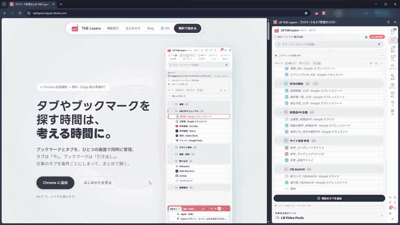
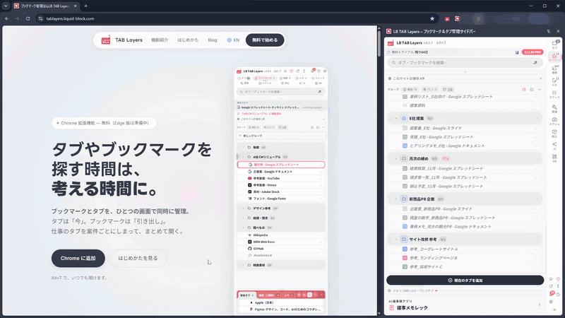
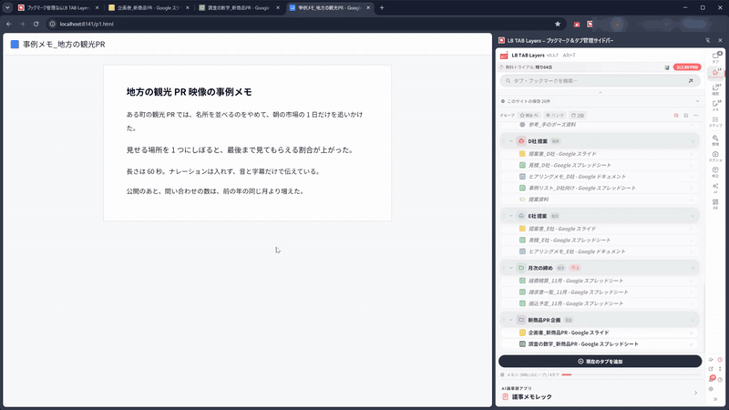
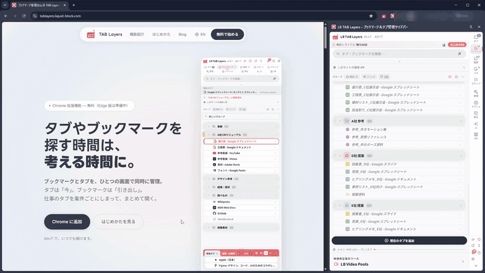
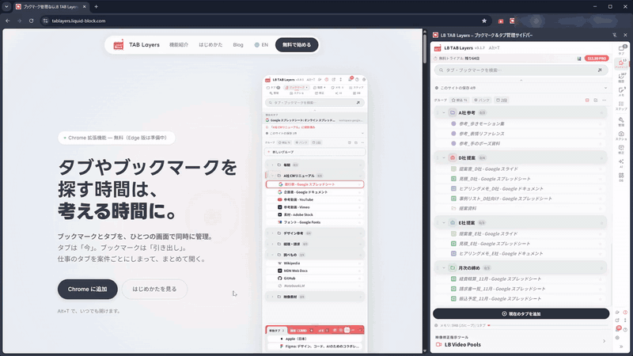

ディレクター・編集
映像を確認して、修正のお願いを出す人。
よく困っていること参考と戻しが、案件ごとに散らかる。

案件を開いて、素材のフォルダの場所をコピー。手元の映像を、止めて、その場で書く。書いた指示は、時刻つきのシートにまとまります（約 60 秒）。
素材のフォルダの場所も、同じグループに。押すと、場所をコピーする。PC のフォルダ 映像は、手元のファイルのまま開く。動画は、どこにも送られません。手元の動画ファイル 止めて、その場で書く。Enter で、再生が続く。動画を止めて書く 1 コマずつ合わせて、続けて書く。続けて書く（修正モード） 書いた指示は、時刻つきのシートにまとまる。指示シート 指示は、PDF や PowerPoint で渡す。PDF・PowerPoint
制作（進行・プロデューサー）
いくつもの案件を、同時に進める人。
よく困っていること進行表・戻し・期日が、案件ごとに散らばる。どの表が最新か、分からなくなる。
案件が 3 つ、進行表やカット表が 11 枚。今やらない案件をしまって、今日の進行表にメモ、段取りを進めて、次の案件へ。ひと続きの流れです（約 100 秒）。
今やらない案件は、■ でしまう。今日の案件の進行表やカット表だけが残る。全タブを閉じる ■ グループの中の行を押して、進行表を開く。保存したタブの操作 案件のフォルダ（パソコンや NAS の場所）も、同じグループに置く。ページとフォルダが、ひとつの案件にそろう。PC のフォルダ 気づいたことは、その進行表のメモに。次に開くと、上に出る。このページのメモ 今日の段取りは、ひな形から作って、案件に付ける。案件とひもづけ 1 つずつ、チェックで消していく。ステップを進める 終わったら、■ でまとめて閉じる。ブックマークは残る。全タブを閉じる ■ 次の案件は、▶ ひとつで、まとめて開く。全タブを開く ▶
アニメーター・モデラー
参考を見ながら作り、戻しを受け取って直す人。
よく困っていること参考のページと、進行表やカット表のリストが、何十も開いたままになる。
参考とリストが混ざったタブから、いま見ないリストをしまう。参考を開いて、画像を大きさでしぼり、メモを残す。届いた修正を確かめて、終わったら閉じます（約 100 秒）。
いま見ないリストは、■ でしまう。全タブを閉じる ■ 参考のページは、案件ごとにまとめておいて、行を押して開く。保存したタブの操作 作業ファイルのフォルダも、案件のグループに置く。押すと、場所をコピーする。PC のフォルダ ページの画像は、一覧にして、大きさでしぼる。ページの画像を一覧 気づいたことは、そのページのメモに。このページのメモ 届いた修正は、時刻つきのシートで、場面ごとに確かめる。指示シート 終わったら、■ でまとめて閉じる。全タブを閉じる ■
デザイナー・Web 制作
参考サイトとスクリーンショットが多い人。
よく困っていることあとで見たい参考が、見つけられなくなる。

参考サイトをまとめて開いて、気になったページを続けて撮る。たまってきたら、大きな画面で見わたします（約 50 秒）。
案件の参考サイトを、▶ ひとつで、まとめて開く。全タブを開く ▶ 素材のフォルダも、同じグループに置いておく。PC のフォルダ 気になったページは、ボタンひとつで撮る。このページを撮る 何枚か撮ったら、PowerPoint にまとめて渡す。まとめて保存 撮った画像に、番号を付けて指示を書く。スクショに書き込む たまってきたら、大きな画面で見わたす。ダッシュボードを開く
プランナー
企画の材料を、あちこちから集めて組み立てる人。
よく困っていること集めた事例や数字が、どこにあるか分からなくなる。

見つけた事例を、その場で企画のグループにしまう。考えたことをメモに残し、ページを撮っておく。あとからは、ひとつの欄で探せます（約 50 秒）。
事例は、見つけたその場で、企画のグループにしまう。現在のタブを追加 考えたことは、そのページのメモに。このページのメモ ページの一文は、選んで、メモに足せる。選んだ文字をメモに ページを撮って、PowerPoint の下地にする。まとめて保存 探すときは、ひとつの欄で。ブックマークも、メモも。検索
営業企画
提案先と資料を、案件ごとに管理する人。
よく困っていること提案のたびに、同じページを探して開き直している。

提案先を開いて、資料のフォルダの場所をコピー。提出までの手順を作って進め、終わったら閉じて、次の提案先へ。ひと続きの流れです（約 60 秒）。
今日の提案先を、▶ ひとつで、まとめて開く。全タブを開く ▶ 資料のフォルダの場所も、同じグループに。押すと、場所をコピーする。PC のフォルダ グループの中の行を押して、提案書を出す。保存したタブの操作 提出までの手順は、ひな形から作って、提案先に付ける。案件とひもづけ 1 つずつ、チェックで消していく。ステップを進める 終わったら、■ でまとめて閉じる。ブックマークは残る。全タブを閉じる ■
事務・経理
毎日の手順を、抜けなく進めたい人。
よく困っていること手順の抜けと、同じページの開き直し。

月次の締めの手順を、ひな形から作る。使うページをまとめて開き、気づいたことをメモに。手順を 1 つずつ消して、終わったら閉じます（約 75 秒）。
手順は、ひな形から作って、仕事のグループに付ける。案件とひもづけ 使うページは、▶ ひとつで、まとめて開く。全タブを開く ▶ グループの中の行を押して、ページを出す。保存したタブの操作 気づいたことは、そのページのメモに。このページのメモ 1 つずつ消していくと、全部終わったときに完了。ステップを進める 終わったら、■ でまとめて閉じる。全タブを閉じる ■